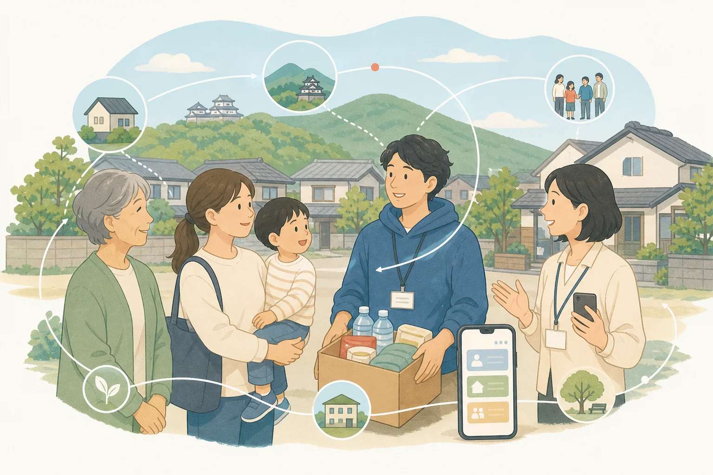

支援の届きにくい場所へ。
車中泊やみなし仮設住宅など、避難所の外で暮らす方への支援。
YOKATAI NET KUMAMOTO
熊本の災害支援・生活再建・地域支援
必要な人に、必要な支援を。
そして、そのつながりを地域の力へ。

CURRENT RESPONSE
現在、私たちが取り組んでいること
団体紹介を読まなくても、いま必要な情報へ進めます。支援制度、生活再建、避難所、自治体の発信を一か所にまとめています。
ABOUT US
一般社団法人よか隊ネット熊本は、2016年熊本地震をきっかけに活動を始めた災害支援・地域支援団体です。
その時、その地域で何が必要なのかを考え、地域の皆さん、行政、企業、支援団体、ボランティアなど、さまざまな人たちとつながりながら活動しています。
よか隊ネット熊本についてOUR PRINCIPLE
災害支援活動を通して、被災者の「暮らし」の再建を支え、これからの「地域づくり」へ貢献する。
INFORMATION IS SUPPORT
物資だけが支援ではありません。「どこへ相談すればいいか」「どんな制度を使えるか」が分かることは、暮らしを立て直す大切な一歩です。
困りごとから情報を探すOUR HISTORY
支援から漏れやすい人を支えることから始まり、人と支援、そして必要な情報をつないできました。
車中泊やみなし仮設住宅など、避難所の外で暮らす方への支援。
支援団体の後方支援と、被災された方の居場所「お茶処」の運営。
支援制度、生活再建、相談先へたどり着くための情報支援。
WORK WITH US
立場や得意なことに合わせて、無理なく続けられる関わり方を一緒に考えます。
できることを、必要な場所へ。